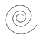

Политика конфиденциальности
Последнее обновление 01 января 2021 г. Спасибо, что решили стать частью нашего сообщества на SitesWP. Мы стремимся защитить вашу личную информацию и ваше право на конфиденциальность. Если у вас есть какие-либо вопросы или сомнения по поводу нашей политики или наших действий в отношении вашей личной информации, пожалуйста, свяжитесь с нами по адресу siteswp@inbox.ru. Когда вы посещаете наш интернет сайт https://siteswp.decorumania.ru/ и пользуясь нашими услугами, вы доверяете нам свою личную информацию. Мы очень серьезно относимся к вашей конфиденциальности. В этой политике мы стремимся объяснить вам как можно яснее, какую информацию мы собираем, как мы ее используем и какие права вы имеете в отношении нее. Мы надеемся, что вы потратите некоторое время, чтобы внимательно прочитать её, так как это важно. Если есть какие-либо условия с которым вы не согласны, пожалуйста, прекратите использование нашего сайта. Эта политика конфиденциальности относится ко всей информации, собранной через наш интернет сайт ( https://siteswp.decorumania.ru/). Пожалуйста прочтите эту политику конфиденциальности внимательно, так как это поможет вам принимать обоснованные решения о предоставлении нам вашей личной информации. 1. КАКУЮ ИНФОРМАЦИЮ МЫ СОБИРАЕМ? Личная информация, которую вы раскрываете нам Кратко: мы собираем предоставленную вами личную информацию, такую как имя, адрес , контактная информация. Мы собираем личную информацию, которую вы добровольно предоставляете нам для получения интересующей вас информации о наших продуктах и услугах, для связи с нами. Личная информация, которую мы собираем, зависит от контекста вашего взаимодействия с нами и Сервисы, выбор, который вы делаете, и продукты и функции, которые вы используете. Личная информация, которую мы собираем, может включать следующее: Публично доступная личная информация. Мы собираем имя, фамилия и псевдоним; телефонные номера; адрес электронной почты; социальные сети; и другие подобные данные. Вся личная информация, которую вы предоставляете нам, должна быть достоверной, полной и точной. 2. КАК МЫ ИСПОЛЬЗУЕМ ВАШУ ИНФОРМАЦИЮ? Кратко: мы обрабатываем вашу информацию для целей, основанных на законных деловых интересах с вашего согласия. Мы используем личную информацию, собранную через наши Сервисы для различных деловых целей, описанных ниже. Мы обрабатываем вашу личную информацию для этих целей, опираясь на наши законные деловые интересы, чтобы заключить или выполнить договор с вами с вашего согласия и / или для соблюдения наших обязательств. Мы указываем конкретные основания обработки, на которые мы опираемся, рядом с каждой целью, перечисленной ниже. Мы используем информацию, которую мы собираем или получаем: Чтобы отправить вам маркетинговые и рекламные сообщения. Мы и / или наши сторонние маркетинговые партнеры можем использовать личную информацию, которую вы отправляете нам, в наших маркетинговых целях, если это соответствует вашим маркетинговым предпочтениям. Вы можете отказаться от наших маркетинговых рассылок в любое время (см. Ниже « ЧТО ТАКОЕ ПРАВА НА КОНФИДЕНЦИАЛЬНОСТЬ »). Чтобы отправить вам административную информацию. Мы можем использовать вашу личную информацию для отправки вам информации о продукте, услуге и новой функции и / или информации об изменениях в наших условиях, правилах и политиках. Запрос обратной связи. Мы можем использовать вашу информацию, чтобы запросить обратную связь и связаться с вами по поводу использования наших Сервисов. Предоставлять услуги пользователю. Мы можем использовать вашу информацию для предоставления вам запрошенной услуги. Отвечать на запросы пользователей / предлагать поддержку пользователям. Мы можем использовать вашу информацию для ответа на ваши запросы и решения любых потенциальных проблем, которые могут возникнуть у вас при использовании наших Сервисов. 3. ВАША ИНФОРМАЦИЯ НЕ РАЗГЛАШАЕТСЯ НИКОГДА? Кратко: мы передаем информацию только с вашего согласия, чтобы соблюдать законы, предоставлять вам услуги, защищать ваши права или выполнять деловые обязательства. Мы можем обрабатывать или передавать данные на основании следующих правовых основ: Согласие. Мы можем обработать ваши данные, если вы дали нам особое согласие на использование вашей личной информации в определенных целях. Законные интересы: мы можем обрабатывать ваши данные, когда это разумно необходимо для достижения наших законных деловых интересов. Выполнение контракта. Если мы заключили с вами контракт, мы можем обработать вашу личную информацию для выполнения условий нашего контракта. Жизненно важные интересы: Мы можем раскрывать вашу информацию в тех случаях, когда мы считаем, что это необходимо для расследования, предотвращения или принятия мер в отношении возможных нарушений нашей политики, предполагаемого мошенничества, ситуаций, связанных с потенциальными угрозами безопасности любого человека и незаконной деятельности, или в качестве доказательств в судебный процесс, в котором мы участвуем. В частности, нам может потребоваться обработать ваши данные или передать вашу личную информацию в следующих ситуациях: Продавцы, консультанты и другие сторонние поставщики услуг. Мы можем передавать ваши данные сторонним поставщикам, поставщикам услуг, подрядчикам или агентам, которые предоставляют услуги для нас или от нашего имени и требуют доступа к такой информации для выполнения этой работы. Примеры включают в себя: обработку платежей, анализ данных, доставку электронной почты, услуги хостинга, обслуживание клиентов и маркетинговые усилия. Мы можем разрешить отдельным сторонним организациям использовать технологию отслеживания на Сервисы, что позволит им собирать данные о том, как вы взаимодействуете с Сервисами через некоторое время. Эта информация может использоваться, помимо прочего, для анализа и отслеживания данных, определения популярности определенного контента и лучшего понимания онлайн-активности. Если в настоящей Политике не указано иное, мы не передаем, не продаем, не сдаем в аренду и не передаем какую-либо вашу информацию третьим лицам в рекламных целях. 4. ИСПОЛЬЗУЕМ ЛИ КУКИ И ДРУГИЕ ТЕХНОЛОГИИ ОТСЛЕЖИВАНИЯ? Коротко: мы можем использовать файлы cookie и другие технологии отслеживания для сбора и хранения вашей информации. Мы можем использовать файлы cookie и аналогичные технологии отслеживания (например, веб-маяки и пиксели) для доступа или хранения информации. Конкретная информация о том, как мы используем такие технологии и как вы можете отказаться от определенных файлов cookie, изложена в нашей Политике использования файлов cookie., 5. КАК ДОЛГО МЫ ХРАНИМ ВАШУ ИНФОРМАЦИЮ? Короче говоря: мы храним вашу информацию столько времени, сколько необходимо для достижения целей, изложенных в этой политике конфиденциальности если иное не требуется по закону. Мы будем хранить вашу личную информацию в течение всего времени, необходимого для целей, изложенных в настоящем документе. политика конфиденциальности, если более длительный срок хранения не требуется или не разрешен законом (например, налоговые, бухгалтерские или другие правовые требования). Никакая цель в этой политике не потребует от нас хранения вашей личной информации дольше, чем 90 дней, Если у нас нет действующей законной коммерческой необходимости обрабатывать вашу личную информацию, мы удалим ее или анонимируем, или, если это невозможно (например, из-за того, что ваша личная информация была сохранена в резервных архивах), мы будем надежно хранить ее. вашу личную информацию и изолировать ее от дальнейшей обработки, пока удаление не станет возможным. 6. КАК МЫ ХРАНИМ ВАШУ ИНФОРМАЦИЮ? Коротко: мы стремимся защитить вашу личную информацию с помощью системы организационных и технических мер безопасности. Мы внедрили соответствующие технические и организационные меры безопасности, предназначенные для защиты безопасности любой личной информации, которую мы обрабатываем. Однако, пожалуйста, также помните, что мы не можем гарантировать, что сам Интернет на 100% безопасен. Хотя мы сделаем все возможное для защиты вашей личной информации, передачи личной информации нашим Сервисам на свой страх и риск. Вы должны получать доступ к услугам только в безопасной среде. 7. Собираем ли мы информацию от несовершеннолетних? Кратко: мы сознательно не собираем данные и не продаем детям до 18 лет. Мы сознательно не запрашиваем данные и не продаем детям до 18 лет. Используя Сервисы, вы заявляете, что вам не менее 18 лет или что вы являетесь родителем или опекуном такого несовершеннолетнего и соглашаетесь на использование несовершеннолетним иждивенцем Сервисов. 8. Каковы ваши права на конфиденциальность: Вы можете просмотреть, изменить или удалить свою учетную запись в любое время. 9. ОРГАНЫ УПРАВЛЕНИЯ ДЛЯ НЕОБХОДИМЫХ ФУНКЦИЙ Большинство веб-браузеров, а также некоторые мобильные операционные системы и мобильные приложения включают функцию «Не отслеживать» («DNT») или параметр, который вы можете активировать, чтобы указать на то, что вы предпочитаете конфиденциальность, чтобы не отслеживать и не собирать данные о ваших действиях в Интернете. Единого технологического стандарта для распознавания и реализации сигналов DNT не было завершено. Таким образом, в настоящее время мы не отвечаем на сигналы браузера DNT или любой другой механизм, который автоматически сообщает о вашем выборе не отслеживаться в Интернете. Если будет принят стандарт для онлайн-отслеживания, которому мы должны следовать в будущем, мы сообщим вам об этой практике в пересмотренной версии этого документа.политика конфиденциальности. 12. Как вы можете связаться с нами по поводу этой политики? Если у вас есть вопросы или комментарии об этой политике, вы можете напишите нам на siteswp@inbox.ru. SitesWP Краснодар, Краснодарский край Россия КАК ВЫ МОЖЕТЕ ПРОСМАТРИВАТЬ, ОБНОВЛЯТЬ ИЛИ УДАЛЯТЬ ДАННЫЕ, КОТОРЫЕ МЫ СОБИРАЕМ ОТ ВАС? В соответствии с законодательством вы можете иметь право запросить доступ к личной информации, которую мы получаем от вас, изменить эту информацию или удалить ее при некоторых обстоятельствах.
